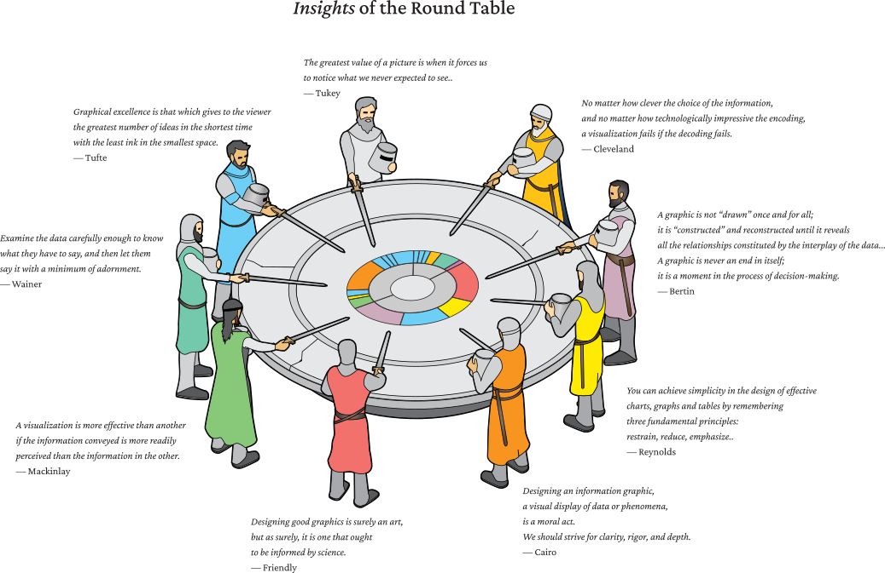
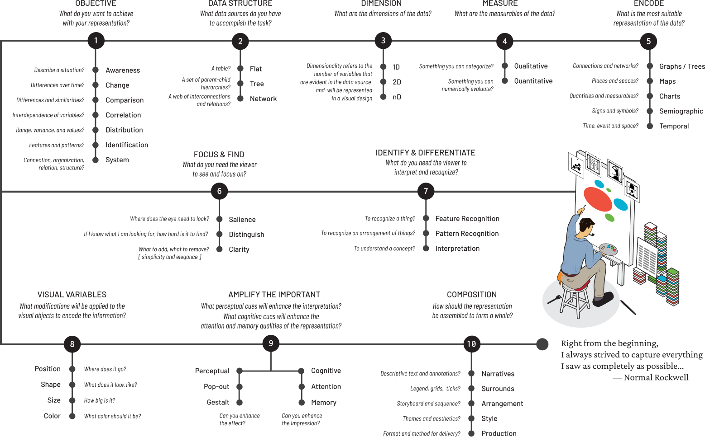

VIEWS
Photo by Annie Spratt on Unsplash
Close your eyes and visualize…
— Alfred Hithcock
The objective of this task is to provide the art and science for constructing accurate, meaningful, and expressive visual representations of data. This task focuses on the design process based on a foundation of principles established from decades of research and practice. These are the key areas we’ll focus on addressing:
This leading question is the focus of this task. The question underscores the importance of striving for the knowledge, skill, and experience in designing representations following best practices, guiding principles, and learning from the feedback of your audience. This skill is like any other master craft. Take for example the notebooks of Leonardo da Vinci, 13,000 pages of notes and drawings reinforcing the importance that he placed on knowledge and technique. Similarly, we will learn from artists and scientists who have shared their experiences and advice on good design practices.

We can see a few common themes that emphasize core principles, but this is only a preamble for the extensive body of knowledge that provides more detailed advice on a wide variety of design considerations such as perception, cognition, aesthetics, style, construction, and composition. Before we climb that mountain, let’s establish a minimum and uncompromising set of principles as a departure point for the broader design process:
If we adhere these core principles, we can explore, experiment, innovate, and create based on a foundation of credibility and high standards. You will be faced with endless design options and decisions that will not have a set of clear rules or prescriptions. This is a welcome freedom — to enhance your work with creative expression, originality, and vision.
The workflow is based on a process which leads you through the design, development and build sequence of a visual representation. This process is intended to guide you through the selection criteria for making choices about the approaches taken in your design. The workflow is multifaceted to address all aspects of the final construct, most importantly the usability and usefulness of the final result.
It’s not just what it looks like and feels like. Design is how it works.
— Steve Jobs, The New York Times, 2003
Here’s an overview of the ten (10) design considerations to create a blueprint for your representation:

Although it may seem a bit complicated, the idea is to ask yourself questions that can reveal a design choice when evaluating options. The more you work with the process, the more natural it will feel and become a standard work practice.
There are three responses to a piece of design – yes, no, and WOW!
Wow is the one to aim for.
— Milton Glaser
Each of the steps will be covered in later sections of the Kamino learning path. As you gain more knowledge and experience applying these techniques to your work, you and your audience will see the difference — the WOW!